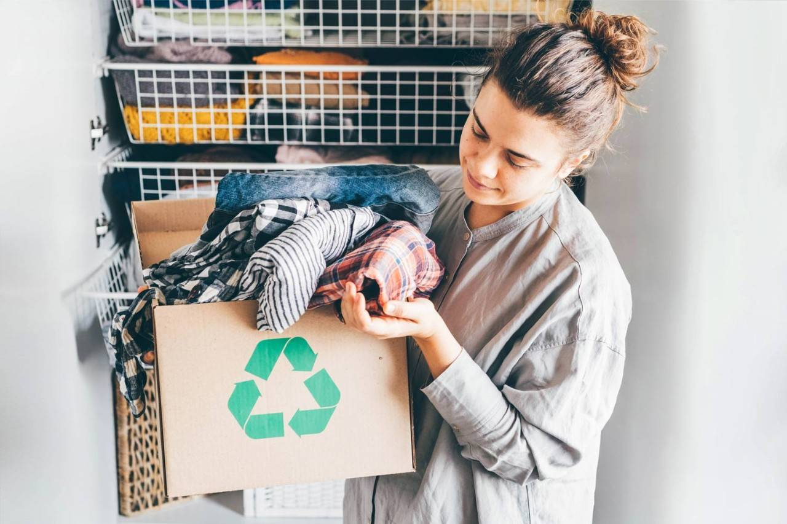
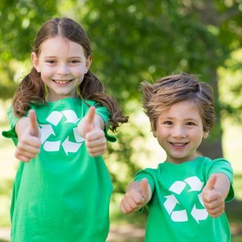

Reducir, reciclar y reutilizar: la regla de las tres “r”, a favor del planeta
A nivel mundial, cada minuto se vende alrededor de un millón de bebidas cuyos recipientes están fabricados...
Hablemos de basura. La producimos todos, pero ¿sabemos qué hacer con ella?
7 ideas para mejorar el reciclaje. Constantemente surgen nuevas formas de reciclar y nuevas formas de hablar de ello...

Reciclaje cotidiano, un simple estilo de vida que muchos optan cada vez más
En la actualidad muchos de los productos que usamos cotidianamente pueden ser reciclados sin que lo sepamos Por ello, es importante que el...